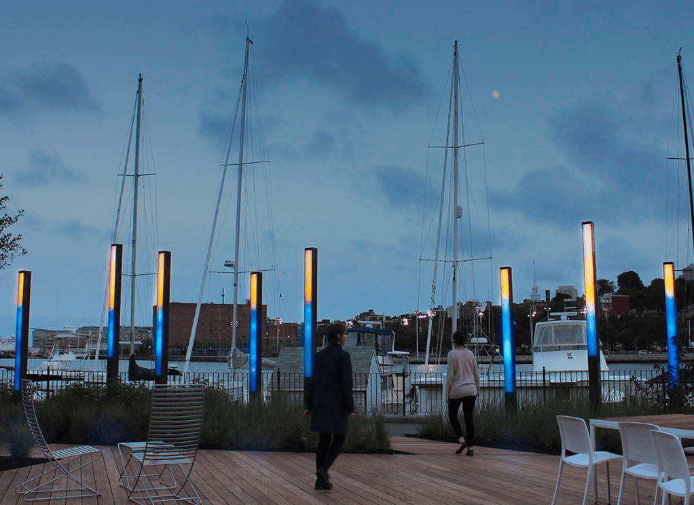
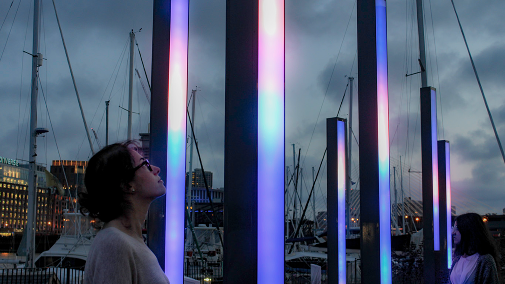
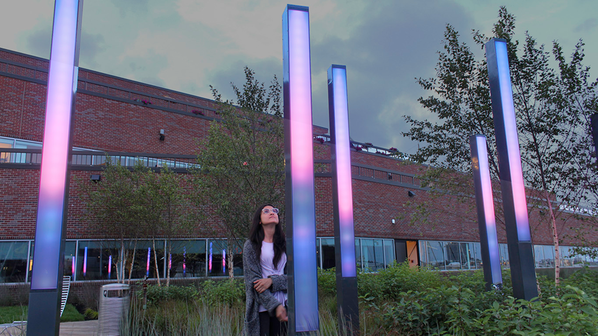
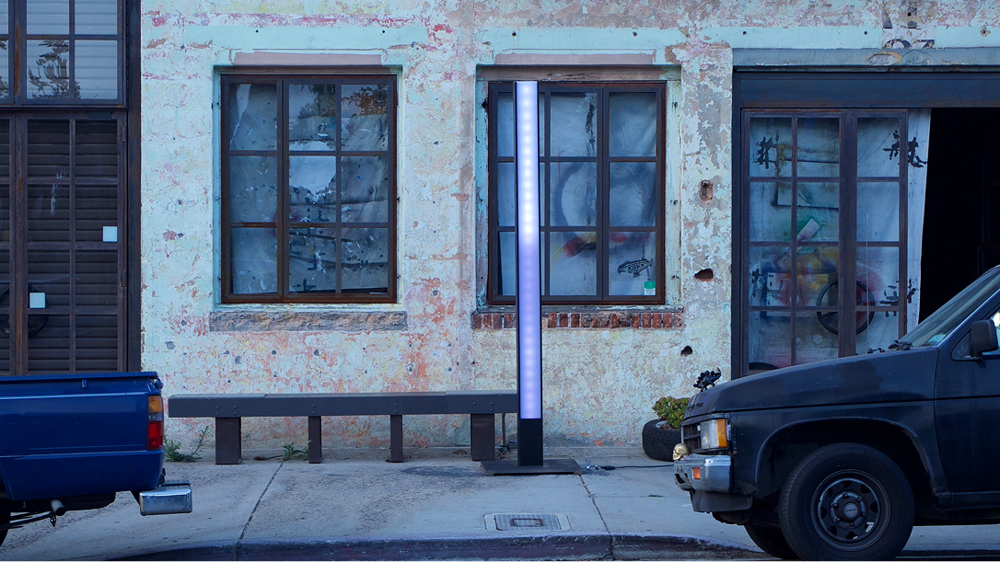
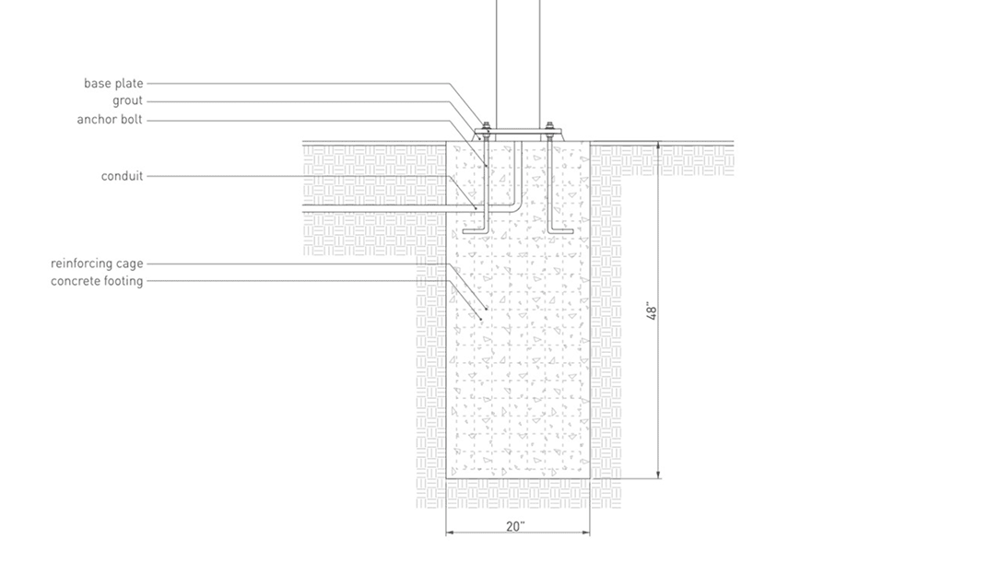
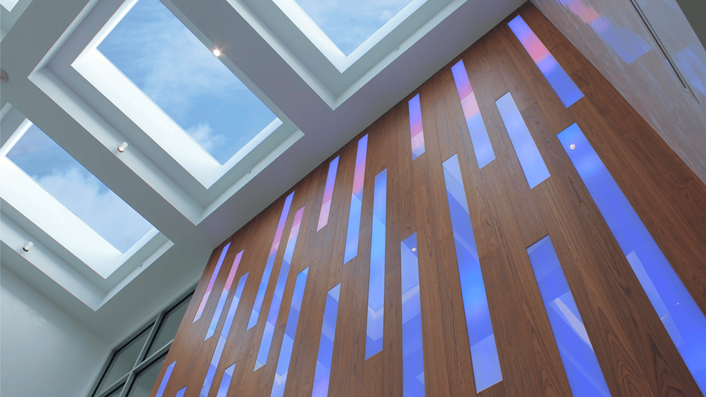
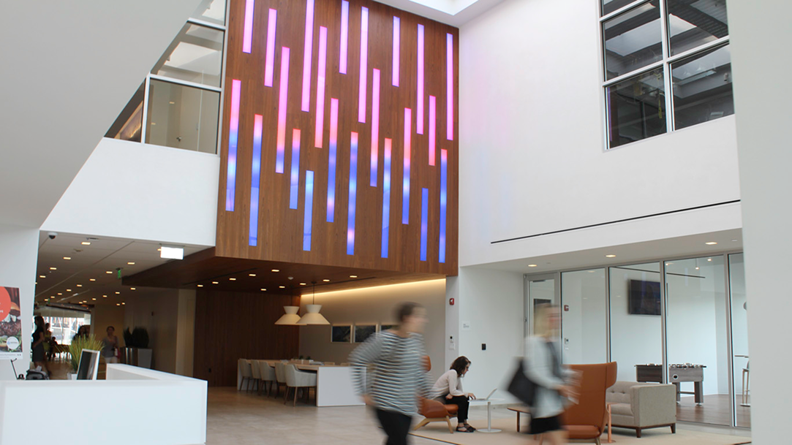
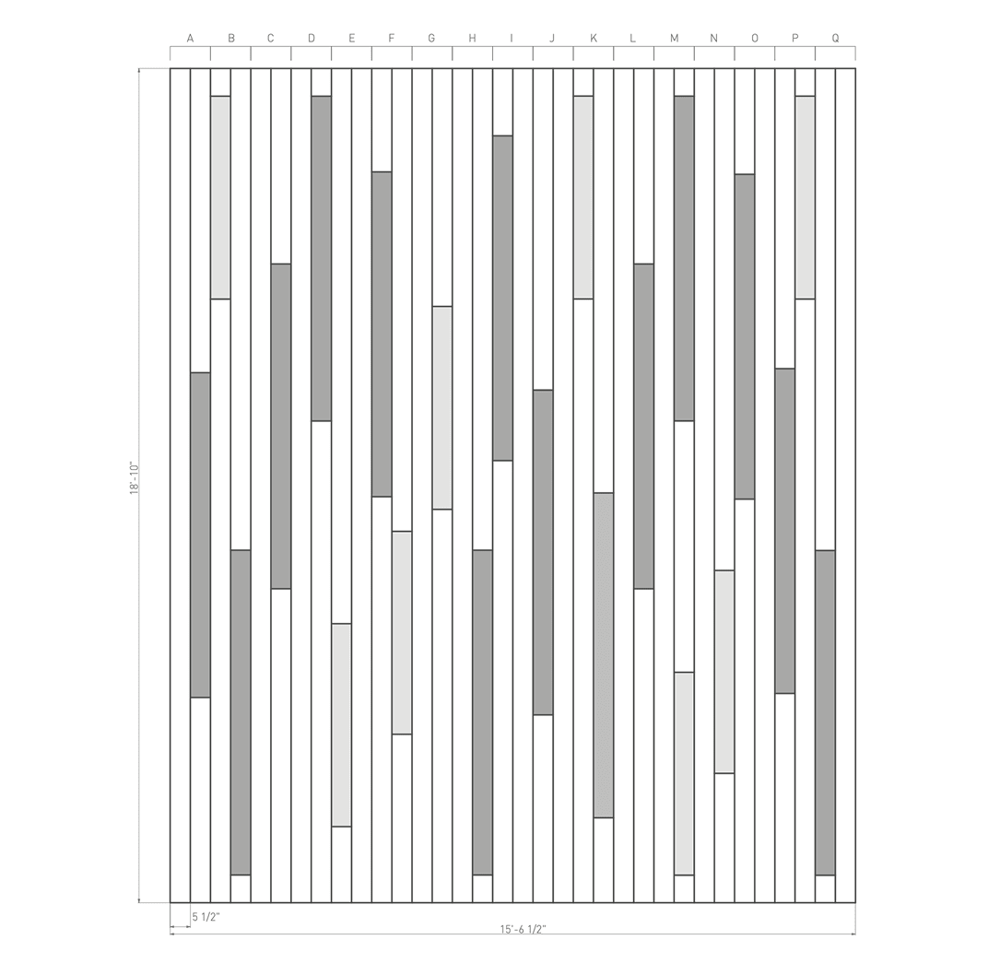
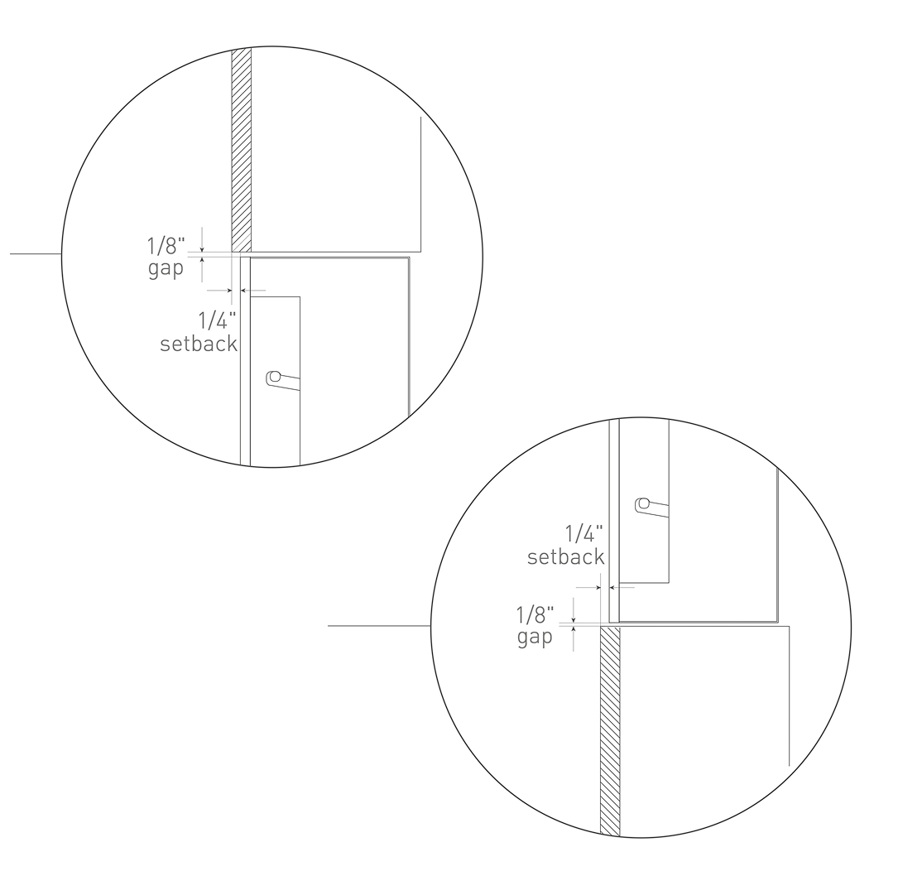

Sosolimited
Tidal Light
Tidal Light translates tide data into a public light sculpture on Boston Harbor. Data is updated in real time from the National Oceanic and Atmospheric Administration. The lighting simulates a scene of water and sky, showing the current tide level with the height of the horizon and wave conditions through the movement of the water.







